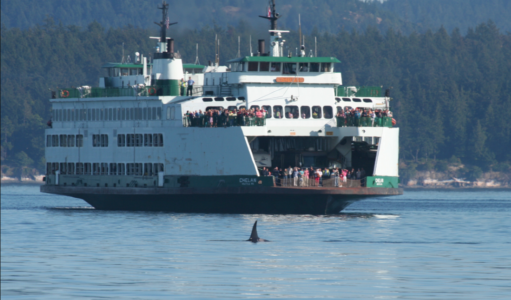

Long-term trends in Puget Sound marine mammals/h2>

Scott Veirs, Chair of PSEMP Marine Mammal Work Group (MMWG)
Marine Waters 2018 Overview Workshop, May 1, 2019
Slides at: psemp.net/mmwg/talks
Southern resident killer whales (SRKWs)
Data sources:
Harbor (and Dall's) porpoise(s)
Harbor (and Dall's) porpoise(s)
/